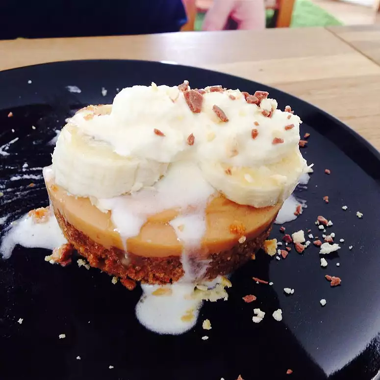

Banoffee

Description
This is a recipe for making Banoffee! Banoffee is the dessert my mom made recently, and it was super delicious. If you have a chance do try them!
Hope you find the picture worth tasting, enjoy this recipe I found and have fun making.
Ingredients
- 1½ cups graham cracker crumbs
- 1 cup butter
- ½ cup white sugar
- 3 teaspoons ground ginger
- 1 (14 ounce) can sweetened condensed milk
- 2 bananas, sliced
- 2 cups heavy whipping cream
Steps
- Mix graham cracker crumbs, sugar, melted butter or margarine, and ginger until well blended . Press mixture into a 9 inch pie plate. Cool in refrigerator.
- In a sauce pan, boil an unopened can of sweetened condensed milk for 3 hours. Monitor the water closely, to make sure there is always water in the pan. Remove can from heat and let cool for 10 to 15 minutes.
- Open can and pour toffee into pie crust. Allow to cool.
- Slice bananas over toffee.
- Whip 2 cups of cream and spoon it on top of bananas. Refrigerate before serving.
Home